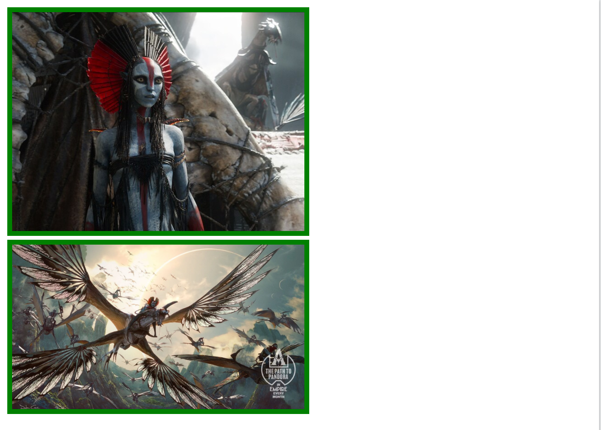

| HTML part |
<div class="gallery"> <img src="./images/avatar-1.jpeg" width="50%" height=50%> <img src="./images/avatar-2.webp" width="50%" height=50%> </div> |
|---|---|
| CSS part |
.gallery>img { border: 5px solid green; } |
| Output |  |